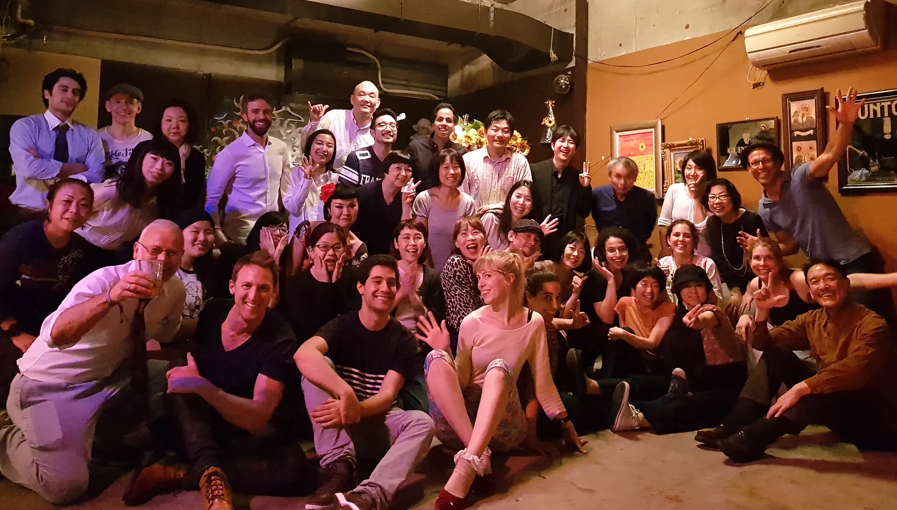

About Us
Swing Dance Kobe grew from a simple invitation and a shared love of music and dancing. Today, it is a small community made possible by the people who show up, lend a hand and make one another feel welcome.

How It All Began
In 2017, Roger Schmidlin, a Swiss Lindy Hopper living in Australia, posted a simple question on Facebook: where could he dance Lindy Hop while exploring Japan and its culture? Natsuki replied with an invitation to Kobe. Roger took her up on it, and soon found friendship with Natsuki, Lucy, Ai and Kenji. Together, they began organising social dances and lessons. Those first connections grew into the community we now call Swing Dance Kobe.
Everyone Brings Something
Roger shares a love of Lindy Hop shaped by many years of dancing, including opportunities to meet Frankie Manning and other original dancers. He helps with workshops, aerials and community choreography, as well as the website and the practical technology that supports our events. He is grateful to share what he has learned and to keep learning alongside the community.
Lucy teaches most of these workshops alongside Roger, bringing her skill, warmth and infectious enthusiasm for Lindy Hop. When Roger is away, she also leads occasional workshops and introductory lessons, helping more people discover the joy of dancing.
Natsuki quietly brings the pieces together. Her relationships with venues and bands help make our gatherings possible, and her care behind the scenes keeps things running. At events, she is often the friendly face welcoming you at the door.
Built Together, With Thanks
Sunflower in Motomachi and IZNT in Sannomiya were among our first venues. We remain grateful for their trust and for giving our little community a place to gather, dance and throw a good party.
The first swing band we connected with was Clap Stomp Swingin’. Their sound was raw, full of swing and wonderfully original — to us, a pure expression of what swing is all about. We’re grateful that their music became part of our community’s story.
Our organising team is small, but this community reaches far beyond it. Every volunteer, musician, venue host and person who joins us helps make these events what they are. Thank you for your time, your encouragement and your willingness to be part of it.
Music and dance mean so much more when we share them. Thank you for being part of Swing Dance Kobe.
Take a look back at the parties, social gatherings, festivals and workshops we have shared.
Explore Our VideosAny questions? Just ask us.